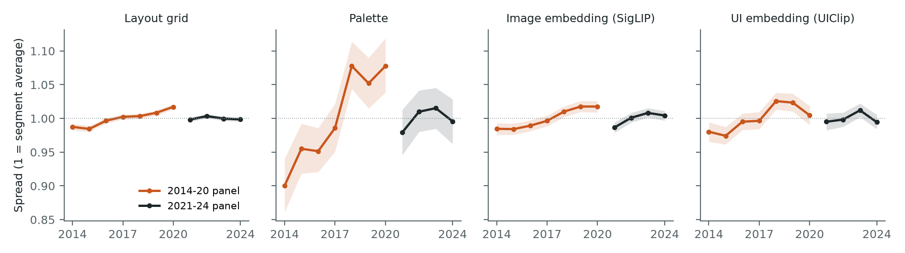
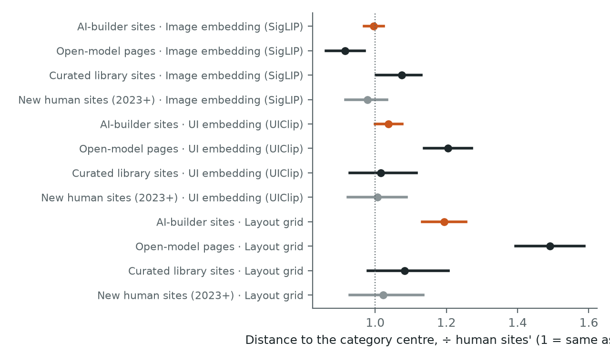

← Research·The Taste Stack · Episode 2·Experiments·
Has the web converged? A design index of 106,000 pages, 2014 to 2026
The same popular sites grew slightly more varied from 2014 to 2020, not less. AI-built sites are no more typical of their industry than human ones, but they look like each other across industries: for 90% of them, the most similar page from another industry is another AI-built site.
report/data.js and results/.Summary: the short answer and the key results
In short
Did web design converge between 2014 and 2026, are AI-built sites nearer the middle of their category, and can "slop" be measured without a judge?
An index of about 106,000 rendered web pages (102,055 public archive screenshots of popular sites, plus 4,500 pages rendered here) was used to ask three questions. The same 1,500 popular sites did not converge between 2014 and 2020: their spread of layouts, palettes and images rose slightly in every measure. Sites hosted on five AI site builders' subdomains are exactly as far from the average human site of their industry as human sites are (1.00×). Their sameness is across industries instead: for 90% of them, the most similar page from a different industry is another AI-builder site, against 27% by chance and 12% for human sites. So the obvious slop number, distance to a category's average, misses templated pages entirely, while repetition across categories finds them perfectly, including on two fresh templates it never saw. A panel of small sites from 2014 to 2026 is still rendering from the archive; its results will be added to this note.
Key results
| What we tested | Result | Compared with |
|---|---|---|
| Did the same top sites converge, 2014-15 to 2019-20? | No: they spread out a little. Spread of layouts −2.7% convergence [−3.3, −2.1], palettes −14.8% [−21.2, −9.0], image embeddings −3.4% [−4.4, −2.2]; 1,500 sites captured every year | The same measure on all sampled sites: −1.6% (layout); a CHI 2021 study found layouts converging by over 30% from 2007, mostly before 2016 |
| Did small sites converge, 2014 to 2026, and since when? | Pending. The archive panel (360 sites, even years) is still rendering at the rate the archive allows; predictions P2 and P4 are scored when it finishes | Results added on 2026-11-21 |
| Are AI-builder sites nearer their category's centre? | No. Their distance to the human centre of their category is 1.00× human sites' [0.97, 1.02] in image embeddings, 1.19× [1.13, 1.26] by layout; 678 sites in 12 categories | Pages one-shot by open code models: 0.92× [0.86, 0.97] in image embeddings, 1.49× by layout |
| Where does AI sameness show, then? | Across categories. For 90% [88, 92] of AI-builder sites, the most similar page from a different category is another AI-builder site (page structure; 62% [59, 66] in image embeddings). Exploratory | With labels shuffled, 27%; for human sites the rate is 12% [10, 13] |
| Is "distance to the category centre" a slop detector? | No; repetition across categories is. Pages from one template filled for 12 industries: centrality AUROC 0.24-0.29 (SigLIP), repetition by page structure 1.00, including two fresh templates in other markup written after the measure was chosen. The registered blend scored 0.63-0.76, under its 0.85 bar | Chance 0.5; 93 held-out templated pages vs 1,817 human sites |
01Introduction
Take a restaurant site built with an AI site builder and ask the index which page, from any other industry, looks most like it. Nine times in ten the answer is another AI-built site: a law firm, a dog groomer, a fintech start-up, sharing its skeleton. Ask the same of a restaurant site built by people and the answer is an AI-built site about one time in eight, less often than chance. That pattern, not any drift toward a bland average, turned out to be where sameness lives in this index.
What is known. A CHI 2021 study rendered about 10,000 popular sites from the Wayback Machine and found they had grown more alike: the average layout distance between sites fell by over 30% since 2007, with most of the fall between 2010 and 2016. A design start-up that indexes millions of sites now says the web kept homogenising and that AI-built sites repeat the same patterns across unrelated categories, so that "a pet shop and a bank look the same". It has published no numbers, and a 2026 analysis of AI web builders argues the same risk qualitatively, without measuring it.
What is missing. Three things. Nobody has measured the years after 2016, when site builders, design systems and then AI site builders arrived. Nobody has separated sites that changed from sites that were replaced: if old, varied sites die and new, similar ones are born, the web looks more alike even if no site changed. And nobody has checked the claim that "slop" is a measurable thing, a page's distance to the centre of its category, against pages known to be templated.
Did web design converge from 2014 to 2026, are AI-built sites nearer the middle of their category, and can slop be measured without a judge?
What this note does. It builds a design index: rendered pages, each reduced to its palette, typefaces, spacing, layout grid, page structure and two image embeddings, in a searchable index. It contributes:
- a design index of 106,377 pages (102,055 public WaybackUI screenshots and 4,322 kept pages rendered here; it grows as the archive panel renders), with the crawler, renderer and feature code;
- a measurement of spread over time on two panels where the same sites are seen every year, beside all sites, so convergence is not confused with turnover;
- a test of AI-built sites against their category's centre, on 678 sites from five AI site builders and 100 pages from open code models;
- a known-answer test of "slop as a number", which splits it into typicality and repetition and shows that only repetition finds templated pages;
- a nearest-pages explorer (section 4.7), built from derived features only; a year slider follows with the panel.
What counts as success. Written down before any confirmatory run:
- every ruler passes its bar: the render filter agrees with a person, captures from the archive match live renders of the same site, pages from one template are closer than pages from different sites, and the industry labels are right;
- a convergence claim holds on the same sites every year, not only on whichever sites existed;
- a slop number separates pages templated on purpose from real sites, AUROC ≥ 0.85, before it is applied to AI-built sites.
02Setup
2.1 Where the pages come from
| Source | Pages | Years | Used for |
|---|---|---|---|
| WaybackUI, from the WebUI project (CMU): screenshots of popular sites from the Wayback Machine, with element boxes and roles | 102,055 | 2014-20 at 1366 px; 2021-24 at 1920 px, other sites | Spread over time at large n |
| Our archive panel: small and mid-sized sites in 12 industries, one capture per even year, rendered here | 314 so far | 2014-2026 | Spread over time with full page features, the same sites every year |
| Live human sites, found with Exa's neural search in 12 industries and 3 countries | 2,560 | 2026 | The category centres |
| Live sites on the default hosting subdomains of five AI site builders, same 12 industries | 979 | 2026 | AI-built sites |
| Pages written by two open code models from one-line prompts ("Build a complete, modern landing page for a pet shop") | 157 | 2026 | AI pages with a known source |
| Six page templates written for this note (A-D first; E and F later, in Bootstrap and Tailwind markup), each filled with content for all 12 industries, twice | 141 | — | The known-answer set for slop |
| Sites from a curated design-reference library, found with its site search and rendered here from their own domains (8 of the 12 industries) | 48 | 2026 | An exploratory high-quality human class |
Kept pages after the render filter; WaybackUI pages are all kept. Industries: finance, health, law, restaurants, pets, software, fashion, non-profits, real estate, education, travel and design studios. Every live page was rendered once more for the noise floor (150 sites). Each source's terms were read before any fetch: the Wayback Machine grants access for research, so requests went one at a time with pauses and backed off when refused; WaybackUI and WebUI are for research; the curated design-reference library's terms exclude dataset building and evaluation with its content, so it is used only to find 71 sites (48 rendered cleanly), each rendered from its own domain; none of its images or text is fetched, stored or shown. No screenshot or page text leaves the lab; the repo ships features and numbers.
2.2 What the index records for each page
Each page is rendered in Chromium at 1280 × 800 pixels, and the extractor reads the first 2,400 pixels of the page (for archive captures, every request that would leave the archive is blocked, so a 2014 page cannot load 2026 files).
- Palette: five colours and their shares, from k-means in CIELAB (a colour space where distance matches how different two colours look) on the first screen. Distance: how far each colour is from its nearest match in the other palette, weighted by share.
- Typefaces: the share of text area set in each font family. Distance: 1 − cosine similarity.
- Spacing: content width, column count, vertical gaps, padding, button rounding, line height.
- Layout grid: the first 1.5 screens cut into 32 × 30 cells, each recording how much is covered by text, media and controls. It is the layout's silhouette.
- Page structure: the tree of visible blocks (a header holding a nav holding links…), summarised by counting its small subtrees (a Weisfeiler-Lehman histogram). Two pages built from the same component code share subtrees even when they look different.
- Image embeddings: SigLIP, a general image model, and UIClip, a model trained to judge user-interface screenshots. Both also read the words on the page.
2.3 Measures
- Spread of a set of pages: the mean distance over pairs from different sites. Each feature space is divided by its mean over the years shown, so 1.0 is the average spread.
- Convergence: the relative fall in spread from the first two years to the last two. Positive means sites grew more alike. Intervals: 1,000 bootstrap resamples of sites, the same draw for every year.
- Distance to the category centre: how far a page is from the average human page of its industry, divided by the median human page's distance. 1.0 means as typical as a human site; below 1, more typical.
- Repetition across categories: a page's mean similarity to its 10 most similar pages from other industries.
03How the study was run
- Write the plan with its Design section and four predictions, and commit it before any render was analysed (predictions in section 6).
- Read every source's terms (five sources; one used only in a minimal way, by the user's decision).
- Discover sites: 192 Exa searches (12 industries × 4 phrasings × 3 countries, plus 48 restricted to AI-builder hosts) gave 3,232 human and 1,030 AI-builder domains, for $4.22.
- Find captures: one Wayback Machine homepage capture per year, the one nearest 1 July, for 1,299 human domains (100 random per industry, plus a first batch).
- Render 4,262 live sites, 71 curated-library sites, 534 templated, open-model and repeat pages, and about 500 (more rendering) archive captures on Modal CPU containers; embed them and the 102,055 WaybackUI screenshots on A10G GPUs.
- Check every ruler on dev sites only (30% of domains by hash) and tune the render filter and nothing else on them; four changes, each in results.tsv.
- Run every question once on the held-out 70%, with 1,000 bootstrap resamples.
| Fixed before any trial | Changed after reading dev results or the data |
|---|---|
| Industries, search phrasings, the AI-builder host list, the capture rule, the features and distances, the measures, the dev/held-out split, four predictions | The render filter: HTTP 202 bot walls dropped; pages with nothing visible dropped; open-model pages cut off at the token limit dropped; the unstyled-page threshold lowered (agreement with a person 51 → 56 of 60) |
| The slop number: the mean of centrality and repetition in SigLIP space, bar AUROC ≥ 0.85 | It failed on dev (0.71). Approved by the user before the fresh held-out test: two numbers, repetition in structure space (the slop number) and SigLIP centrality (typicality), on condition that repetition clear 0.85 on new unseen templates; it scored 1.00 (section 4.5) |
| P1 on WaybackUI 2014-15 vs 2023-24; P2 on our panel 2014-15 vs 2025-26 | WaybackUI turned out to be two cohorts of different sites, so P1 uses its 2014-2020 panel; the archive's rate limit cut our panel to even years, so P2 uses 2014 + 2016 vs 2024 + 2026. Both changed before any held-out number |
Conditions: Playwright 1.48 with Chromium on Modal CPU containers (4 cores); archive captures at most three at a time, two seconds apart, about 220 an hour; live sites six at a time per container. Total spend so far: $16.34 of Modal compute and $4.22 of Exa search, from the spend ledgers.
04Results
4.1 The rulers pass, except the registered slop number
| Ruler | Bar | Result | Pass |
|---|---|---|---|
| Render check: the filter vs a person, 60 dev archive captures (ok or broken) | ≥ 0.90 | 56/60 | Yes (after tuning on the same 60) |
| Capture check: archive capture vs live render of the same site, 2026: same site closer than different sites (AUROC) | ≥ 0.90 | 0.95 SigLIP; 0.86 layout | Provisional (23 sites so far): SigLIP passes, layout just under; final with the panel |
| Template check: pages of one template closer than different sites (AUROC, held-out templates) | ≥ 0.85 per space | 0.992-1.000 | Yes |
| Slop known-answer check: templated pages vs human sites (AUROC, dev templates) | ≥ 0.85 | 0.71 | No; repetition alone, on fresh templates E and F: 1.00 (section 4.5) |
| Label check: industry label right, 60 dev sites read by a person | ≥ 0.85 | 58/60 | Yes (the 2 misses were bot walls, since filtered) |
| Noise floor: the same live site rendered twice (median distance, image embedding) | — | 0.000 | Renders repeat exactly; different sites sit at 0.52 |
The render filter matters more than expected, and in an unexpected direction: in the render-check sample, broken captures (stylesheets that never loaded, bot walls, the archive's own error page) were more common in recent years than old ones, because modern sites load their styles with scripts the archive replays badly. Of 90 captures read by a person (60 dev, 30 held-out), 5 of 28 from 2014-2018 were broken and 18 of 62 from 2020-2026. On the 30 held-out captures, labelled after the filter was tuned, the filter agreed with the person on 23 (0.77), under the 0.90 bar: it dropped four good pages for failed requests and kept two parked domains and one unstyled page. The panel results will be reported with and without the filter.
4.2 The same top sites spread out slightly from 2014 to 2020
Figure 1 shows the spread of 1,500 held-out WaybackUI sites captured every year from 2014 to 2020. In every feature space it rose, not fell: convergence −2.7% [−3.3, −2.1] for the layout grid, −14.8% [−21.2, −9.0] for palettes, −3.4% [−4.4, −2.2] for SigLIP and −3.8% [−5.5, −1.9] for UIClip. All sampled sites in the same years, including those captured in only some years, show the same: −1.6% for layouts and −18.4% for palettes. The second WaybackUI cohort, different sites captured 2021-2024 at 1920 pixels, was flat by layout (+0.2% [−0.2, +0.6]) and spread slightly in image embeddings (−1.3% [−2.2, −0.3]).

results/wbui.json.This does not contradict the CHI 2021 result; it continues it. That study found most of the convergence between 2010 and 2016, and these are the years after. By 2014 the popular web had settled on a shape (a wide hero, a top navigation bar, a grid of cards), and within that shape colours and imagery became more varied, not less. The palette rise is the largest effect and the least certain: older captures lose more images, which leaves more white pages, and that alone would make 2014 look more alike. WaybackUI does not record which requests failed, so its palette trend has no capture-decay control; the panel below does.
4.3 Small sites, 2014 to 2026: pending: the archive panel is still rendering; results added on 2026-11-21
The second panel asks the same question of small and mid-sized sites in 12 industries, through 2026, with full page features (typefaces, spacing and page structure as well as palettes and layouts), and separates the same sites every year (180 sites captured in at least 12 of 13 years) from a fixed sample of all sites (180). It is rendered from the Wayback Machine at about 160 captures an hour, the rate the archive tolerates, so it finishes after this note was first published. When it does, this section, predictions P2 (is the drop in spread mostly the same sites changing, rather than new sites arriving?) and P4 (did the fall speed up after 2022?), the archive-versus-live ruler and the year slider will be added, with no change to the registered design or thresholds.
4.4 AI-builder sites are not nearer the centre of their category
For each industry, the centre is the average of half of its human sites; the other half and every AI-built page are measured against it, and the split is redrawn 500 times. Figure 2 gives each group's median distance to the centre divided by human sites'. AI-builder sites sit exactly as far from their category's centre as human sites in SigLIP space, 1.00× [0.97, 1.02], and further by layout, 1.19× [1.13, 1.26]. Pages that open code models wrote from one-line prompts were a little nearer in SigLIP (0.92× [0.86, 0.97]) and much further by layout (1.49×): they are plainer than real sites, and their content reads as generic, but their layouts are their own.

results/q2_*.json.The boring explanations. AI sites are just newer: human sites first captured in 2023 or later, or never archived, sit at 0.98× [0.92, 1.03] (165 sites), level with all human sites. AI-builder pages are empty drafts: 6 of 985 kept-candidate AI pages had fewer than 30 words or 10 blocks and were dropped before any distance was computed. Human sites are also AI-built: some surely are, which would pull the two groups together; the explorer below shows how differently the two groups behave across categories, which argues against a mixed-up comparison.
4.5 Slop shows up as repetition across categories, not as typicality
The registered slop number averaged two things: how typical a page is for its industry (centrality) and how much it resembles pages from other industries (repetition). Its known-answer test failed. Four page templates written for this note, each filled with the words of 12 industries, should score as slop; on the dev templates the blend scored AUROC 0.71 against human sites, under the 0.85 bar, and on the held-out templates 0.76. Splitting it explains why:
| Pages vs 1,817 human sites (held-out) | Space | Centrality | Repetition | Registered blend |
|---|---|---|---|---|
| Templates C, D (45 pages) | SigLIP | 0.29 | 0.97 | 0.76 |
| Layout grid | 0.03 | 1.00 | 0.53 | |
| Page structure | 0.01 | 1.00 | 0.39 | |
| Fresh templates E, F (48 pages; Bootstrap and Tailwind markup, written after the change) | SigLIP | 0.24 | 0.88 | 0.63 |
| Layout grid | 0.05 | 1.00 | 0.55 | |
| Page structure | 0.07 | 1.00 | 0.90 | |
| AI-builder sites (678) | SigLIP | 0.50 | 0.62 | 0.56 |
| Page structure | 0.30 | 0.63 | 0.43 | |
| Open-model pages (100) | SigLIP | 0.62 | 0.79 | 0.72 |
| Page structure | 0.06 | 0.76 | 0.23 | |
| Curated library sites (48) | SigLIP | 0.41 | 0.67 | 0.52 |
| Page structure | 0.46 | 0.30 | 0.37 |
A templated page is atypical for every industry it is filled for (centrality AUROC 0.01-0.29, far below chance), and repetitive across them. Averaging the two cancels the signal. Splitting slop into two numbers, repetition across categories in the structure spaces (the slop number) and SigLIP centrality (reported as typicality), is a post-pilot change, approved by the user on one condition: that repetition clear 0.85 on new templates it had never seen. Templates E and F were written after the approval in other markup (Bootstrap, and Tailwind's nested wrappers), and scored 1.00 by page structure. Templates C and D had been scored while the approval was being sought (0.97-1.00). A perfect score on templates is partly built in, since a template repeats its structure exactly; the AI-builder sites (0.63) and the curated library (0.30, less repetitive than ordinary human sites) show that the measure is graded rather than all-or-nothing.
Applied to AI-built pages, repetition says they are more alike across categories than human sites, but not by much on its own (AUROC 0.62-0.79). Asking a sharper version of the question, which was not registered, gives a much stronger signal. Take each held-out page and find the single most similar page from a different industry. For AI-builder sites, that page is another AI-builder site 90.1% of the time by page structure [87.9, 92.5], 73.5% by layout and 62.4% [58.7, 65.9] in SigLIP; for human sites it is 11.9%, 24.4% and 25.0%. With the source labels shuffled, the rate would be 27.3% for every group. The effect holds for the four smaller builders on their own (89.1% [83.2, 95.0] by structure, 101 sites), so it is not one product's template. An AI-built restaurant site looks less like other restaurants than like an AI-built law firm.
The boring explanation. Page structure partly records how a page was coded, not only how it looks: pages built from the same component library share subtrees even when their designs differ. That is why the image-embedding numbers matter: they read only pixels, and they show the same pattern, weaker (62% against 25%).
4.6 Exploratory: curated designs sit near the AI cluster but are not repeated
A post-hoc check, added after the held-out results and not part of the registered design: do high-quality human designs, 48 sites from a curated design-reference library rendered from their own domains, sit closer to the AI-builder cluster than ordinary human sites? Measured as each page's similarity to the centre of AI-builder pages from other industries, slightly yes: 0.684 [0.666, 0.703] against 0.633 [0.629, 0.638] by page structure (AUROC 0.70) and 0.687 against 0.662 in SigLIP (0.65), with no difference by layout (0.51). But they are rarely repeated: their nearest page from another industry is an AI-builder site 15% of the time [6, 25], close to human sites' 12%, and their repetition AUROC against human sites is 0.30. A reading, not a test: AI site builders aim at the look of polished product sites, and what sets their output apart is that one skeleton serves every industry.
4.7 Explore it: the nearest pages
The year slider (palettes and layouts of the same small sites, 2014 to 2026) is added with the archive panel's results.
The page
Its five most similar pages from other industries (page structure)
TextMediaControlsWireframes are the layout grid at half resolution; no screenshots or domains are shown. Repetition is the page's similarity to other industries' pages, in standard deviations above a typical human site.
Table 4 and section 4.5 give the numbers; the explorer needs JavaScript.
Pick an AI-builder site: its nearest pages from other industries are almost all AI-builder sites. Pick a human site and the neighbours are mixed. The wireframes are drawn from the layout grid, and the palettes from the k-means colours; both are features the index stores, not pictures of the pages.
05Implications for AI safety
Taste is the next target for reward models, and "avoid slop" is a natural objective. This note suggests two cautions. First, the obvious slop number, distance to the category's average, is the wrong ruler: it rewards and punishes the wrong pages. A page made from one template for every industry is atypical everywhere, so a centrality penalty would let it through, and it would push genuine but typical pages away from what their customers expect. Second, the sameness that AI tools add is between categories, not within them, the pattern Artificial Hivemind measured in language models' open-ended answers, where different models and prompts converge on the same replies; it is invisible to any check that looks at one category at a time. A reward or a monitor that wants to catch it has to compare a page with pages it should not resemble.
Recommendation: measure slop as repetition across unrelated categories in a structural space, checked against pages templated on purpose, and never as distance to a category's centre.
06Predictions
Written in the plan before any confirmatory run, with thresholds; two windows changed before any held-out number, for the reasons in Table 2.
| # | Prediction (confidence) | Threshold | Result | Hit or miss | Reason |
|---|---|---|---|---|---|
| P1 | Layout spread of the same top sites fell, WaybackUI 2014-15 to 2019-20 (70%) | ≥ 10%, CI above 0 | −2.7% | Miss | [−3.3, −2.1]: spread rose; the convergence others found ended before 2014 |
| P2 | In our panel, the same sites' drop in spread is at least half the drop of all sites (60%) | ratio ≥ 0.5 | — | Pending | pending: the archive panel is still rendering; results added on 2026-11-21 |
| P3 | AI-built sites sit nearer their category's centre (70%) | ratio ≤ 0.85, CI below 1 | 1.00 | Miss | [0.97, 1.02]; by layout 1.19; the sameness is across categories (section 4.5) |
| P4 | The fall did not slow after 2022: slope 2022-26 minus slope 2014-22 (40%) | ≤ 0 | — | Pending | pending: the archive panel is still rendering; results added on 2026-11-21 |
Post-mortem. What surprised me: the registered slop number failed because its two halves point in opposite directions; templated pages are atypical everywhere and repetitive across categories. What I'd change: pre-register each component of a composite measure as its own outcome, and check before the run how the target behaves under each one. The lesson for the design guide: a composite score is a hypothesis about how its parts combine, so its known-answer set must be scored on each part as well as on the blend. The other surprise was the archive: modern sites break more often in it than old ones, so a filter tuned on one sample needs an out-of-sample check (this one missed its bar).
07What this does not show
- Homepages, first screens, desktop only. Everything is read from the top 1.5-3 screens of the homepage at 1280 px; inner pages, mobile layouts and motion are not measured.
- The live sample is what a search engine finds today. Sites that died before 2026 are missing from our panel's "all sites" set, and the human sample may include AI-built sites that do not sit on a builder's subdomain.
- The archive is not the web as people saw it. Captures lose images and styles, more so for modern script-heavy sites; the filter removes the worst, and a person agreed with it on 56 of 60 dev captures, a sample it was tuned on.
- WaybackUI's two cohorts. Its 2014-2020 panel and 2021-2024 sites differ in sites and resolution, so no trend across 2020-2021 is claimed.
- AI-built means "on a builder's default subdomain". 83% of those 979 sites come from one builder; the cross-category result holds for the others (101 sites), but each builder's share of the web is unknown.
- The house-style result was not registered. It was found after the registered slop number failed; it is reported with intervals, and it needs a fresh sample to be confirmed.
- The archive panel is unfinished at first publication. P2, P4, the archive-versus-live ruler (provisional on 23 sites) and the year slider are added when it finishes; nothing about them is claimed here.
- The curated library is small and skewed. 48 sites, mostly large product companies, in 8 of the 12 industries; its comparison was added after the held-out results and is exploratory.
- No person judged slop. The known-answer set is pages templated on purpose. Whether repetition matches what people call slop is the next episode's question.
08Reproduce it
Every command behind every number is in reproduce.sh; reproduce.sh --dry-run prints them. The order: find sites (seeds.py, needs an Exa key; about $4), find captures (wayback.py, slow on purpose), choose the panel (panel.py), write the templates (templates.py) and the open-model pages (modal_generate.py), render (modal_render.py), compute features and embeddings (modal_features.py), build the index (index.py), check the rulers (label.py, analyse.py rulers) and answer the questions (analyse.py q1 wbui q2 q3 house --split held), then draw the figures and cover. The render step takes about eight hours, nearly all of it waiting politely on the archive.
09What’s next
- Ask people: do pages with high cross-category repetition read as slop to designers, and does repetition beat an LLM judge at predicting that? (Episode 3: slop probes against judges.)
- Confirm the AI house style on a fresh sample of AI-built sites, including sites on custom domains, and see which components carry it.
- Use repetition as a divergence term in a reward: a page should be near its brand and far from unrelated pages (Episodes 5 and 6).
10Questions and answers
So has the web converged?
It did before 2016, by earlier measurements. From 2014 to 2020, popular sites spread out slightly by every measure here. Whether small sites converged from 2014 to 2026 is the open half of the question; the panel that answers it is still rendering. The sameness that is new is the kind AI site builders add: pages from different industries that share one skeleton.
Why not just measure distance to the average?
Because a typical page is not a lazy page. A bakery's site should look like a bakery's site; that is fit, not slop. The pages that feel mass-produced are the ones that look like a page from somewhere else, and a template filled for twelve industries is the clearest case: it is atypical for all of them. Repetition across categories catches it; distance to the average misses it.
Which AI site builders?
Five builders whose sites live on their own hosting subdomains. The note does not name them: the result is about the pattern, the sample is what a search engine returned on one day, and 83% came from one builder. The four smaller ones, taken alone, show the same cross-category pattern.
Can I see the pages?
No. The index stores screenshots and page code only in the lab, because they are other people's work. The repo and this page ship what the index derives from them: palettes, layout grids, structure summaries, distances and every number in the note.
AAppendix: data
| File | What it holds |
|---|---|
| results/wbui.json | WaybackUI, per cohort (1366-768, 1920-1080) and set (stable, all) and space: years, raw spread div and its interval, normalised spread norm and norm_ci, convergence and its interval, slopes and the two-segment breakpoint; sites per year |
| results/q1_ours.json | The same for our archive panel, plus ratio_stable_all per space and the shuffled-year null (200 permutations) |
| results/q2_*.json | Distance to the category centre relative to human sites, per group (ai_host, generated, human_new): ratio, ci, n, per_category |
| results/q3.json | AUROC against human sites of the registered blend (slop), cent and rep, per group and space |
| results/house.json | The exploratory nearest-page rates per space and group, with intervals and the same-builder rate |
| results/rulers.json, ruler_r1.json, ruler_r5.json, labels_r1.json | Ruler results and the hand labels (page ids only) |
| results/index_summary.json | Index size by source and year |
| results.tsv, results/spend/, thresholds.json | The dev tuning ledger, the spend ledgers and the tuned filter thresholds |
| report/data.js | The interactive's data: per year, 40 palettes (hex colour, share), the mean layout heatmap and spreads; 90 pages with their wireframes, palettes and five nearest pages from other industries |
How to cite
Lie, A. (2026). Has the web converged? A design index of 106,000 pages, 2014 to 2026. The Taste Stack, Episode 2. steerlab. https://albertlieyingadrian.github.io/steerlab/experiments/design-index/report/
RReferences
- Investigating the Homogenization of Web Design: A Mixed-Methods Approach, CHI 2021: doi.org/10.1145/3411764.3445156
- WebUI: A Dataset for Enhancing Visual UI Understanding with Web Semantics, CHI 2023: arxiv.org/abs/2301.13280; WaybackUI screenshots: huggingface.co/datasets/biglab/waybackui-all
- UIClip: A Data-driven Model for Assessing User Interface Design, UIST 2024: arxiv.org/abs/2404.12500
- Sigmoid Loss for Language Image Pre-Training (SigLIP), ICCV 2023: arxiv.org/abs/2303.15343
- Weisfeiler-Lehman Graph Kernels, JMLR 2011: jmlr.org/papers/v12/shervashidze11a
- Artificial Hivemind: The Open-Ended Homogeneity of Language Models (and Beyond), NeurIPS 2025: arxiv.org/abs/2510.22954
- Exa neural search API (discovery of live sites): exa.ai
- Interrogating Design Homogenization in Web Vibe Coding, 2026: arxiv.org/abs/2603.13036
- Internet Archive, Wayback Machine and its terms of use: archive.org/about/terms